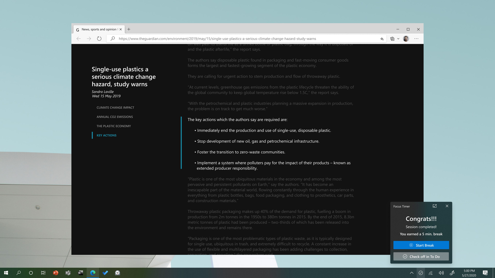

Internet distractions cause a loss in productivity that costs the U.S. economy over $997 billion annually. Remote work due to the COVID-19 pandemic worsened this problem. Grounded in the lived experiences of neurodivergent individuals, A Calmer Web is a digital sanctuary where users can focus, be productive, and achieve their goals.
I developed the vision and roadmap for A Calmer Web, driving a partnership across Windows and Microsoft Edge. To iterate on and validate the design, I conducted 8 semi-structured interviews with neurodiverse users. I also produced the above pitch video to publicize the project and led subsequent investments in cognitive and mental health accessibility.
A Calmer Web was grounded in my experiences with undiagnosed autism and ADHD. While working from home during the COVID-19 pandemic, I found it really hard to focus on the Internet. Websites were constantly overwhelming me with trending news, ads, and notifications. Certain stimuli were directly harmful, triggering my Complex Post-Traumatic Stress Disorder (CPTSD) and leaving me in an immobilized state of panic. I reached out to other Microsoft employees from the Neurodiverse ERG and discovered that I was not alone in these experiences, which inspired me to build and deploy A Calmer Web.
A Calmer Web was implemented as a Microsoft Edge browser extension that helps users focus through digital affordances based on ADHD management tools. It integrated with the Focus Timer and Microsoft To-Do applications to facilitate Pomodoro sessions and offer machine learning–based recommendations based on users' current task.

A Calmer Web received enthusiastic support from Windows leadership. I leveraged the success of the project to drive new productivity solutions for neurodivergent users, including the Focus Sessions feature on Windows 11, which was inspired by A Calmer Web.
This project showed me how I can combine Inclusive Design, assistive technology, and lived experience to create technology that benefits both disabled people as well as mainstream users, including enterprise customers and businesses like Microsoft.